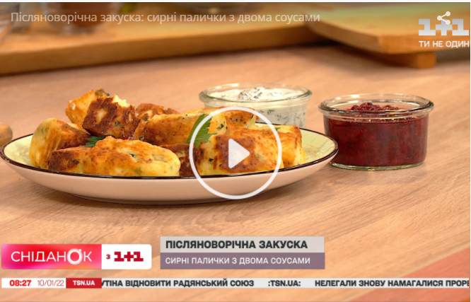

Післяноворічна закуска: рецепт сирних паличок
Рецепт від ведучих "Сніданку з 1+1": смачні гарячі сирні палички Після новорічних свят хочеться приготувати щось легке, але дуже смачне: сирні палички слугуватимуть гарною закускою до гарячих зимових страв. В ефірі "Сніданку з 1+1" ведучі приготували їх з декількох різних видів сирів.
ЧИТАЙТЕ ТАКОЖ:
Рецепт домашньої куті від Лідії Таран: "Класно, коли всі складники вже пожили разом, настоялись і співатимуть хором"Для того, аби приготувати сирні палички за рецептом Руслана Сенічкіна та Людмили Барбір, вам знадобиться:
-
- або 100 г сир фета
- або 100 г сир чедер
- або 100 г сир вершковий
- 100 г моцарела
- 100 мл молоко
- 1 шт. яйце
- 10 г розпушувач
- Сіль на смак
- 1 пучечок петрушки або інша ваша улюблена зелень (кріп, кінза, базилік тощо)
- 300 г борошна
- Олія для смаження.
Отже, для того, аби зробити такі сирні палички, треба натерти сири, пом'яти виделкою й поєднати разом із зеленню. До цієї маси доливаєте трохи молока та розпушувач. Руслан Сенічкін пояснив, для чого:
Розпушувач треба для того, аби в результаті смаження палички набухли та зробилися порожнини всередині. Це буде мати ще кращий вигляд, і структура з текстурою будуть іншими й правильними. Також як "будівельний матеріал" для смаження використовуйте борошно та яйце.
За допомогою борошна сформуйте з готової маси паличку та смажте до скоринки з усіх боків. Варто, аби в результаті сирна паличка була пориста та не забита борошном. Можете поєднати такий делікатес з ягідним соусом або на основі несолодкого йогурту з огірками. Смачного!